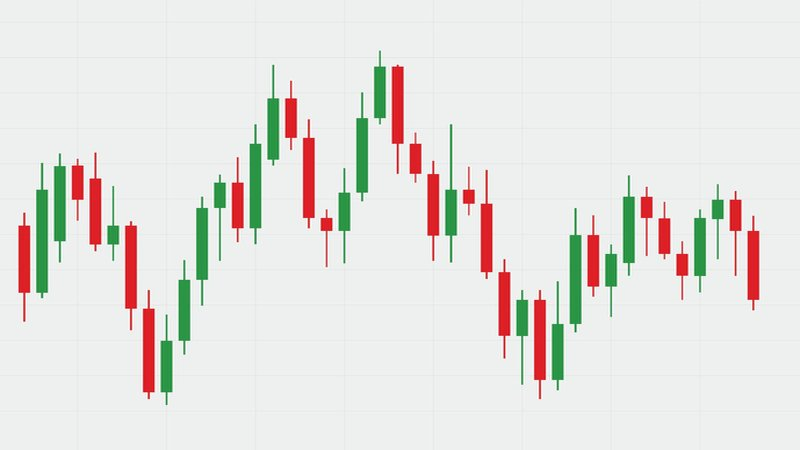

Tax Loss Harvesting: A Practical Guide for 2026
My phone buzzed during dinner last November. Jennifer gave me that look—the one that says "if you answer that, you are walking Cooper alone tonight." But it was a long-time client, and his text was short: "Market is down 15%. Should I sell everything?"
I did not answer during dinner. I finished my brisket. I helped Ethan with his math homework. I walked Cooper. Then I called him back. "No," I said. "You should not sell everything. But you should harvest your losses."
He did. We identified $34,000 in unrealized losses across his taxable brokerage account. Sold the losers. Bought similar (but not identical) funds to maintain market exposure. Used the losses to offset $15,000 in capital gains from earlier in the year. Deducted $3,000 against ordinary income. Carried forward $16,000 to 2026. Tax savings: roughly $6,800.
That is tax loss harvesting. And November 2025 was a perfect time for it. Here is how it works.
What Is Tax Loss Harvesting?
You sell investments that have declined in value to realize capital losses. Those losses offset capital gains dollar-for-dollar. If losses exceed gains, you can deduct up to $3,000 against ordinary income annually. Excess losses carry forward indefinitely.
Example: You have $20,000 in long-term gains from selling winners earlier in the year. You have $25,000 in unrealized losses in other holdings. Harvest the $25,000 losses. Net result: $20,000 gains offset completely. $3,000 deducted against ordinary income (saving $720-1,110 depending on bracket). Remaining $2,000 carried forward to next year.
The Wash Sale Rule: Your Enemy
You cannot sell a security at a loss and repurchase the same or "substantially identical" security within 30 days. Do so, and the loss is disallowed. The disallowed loss is added to the basis of the new shares, so you do not lose it forever—but you lose the immediate tax benefit.
"Substantially identical" is vague. The IRS has not issued clear guidance on ETFs vs mutual funds tracking the same index. Conservative approach: sell S&P 500 ETF (VOO), buy total market ETF (VTI). Different index. Different fund. Safe. Aggressive approach: sell VOO, buy SPY. Same index. Different provider. Probably safe, but not guaranteed.
I tell clients: if you are not sure, buy something clearly different. Sell a tech ETF, buy a broad market ETF. Sell an individual stock, buy a sector ETF. Wait 31 days, then swap back if desired.
Crypto and Wash Sales (For Now)
As of 2026, the wash sale rule does NOT apply to cryptocurrency. Congress has debated changing this. It might happen. It might not. If you are harvesting crypto losses, you can sell Bitcoin at a loss and rebuy immediately. No 30-day wait.
I have a client who harvested $12,000 in Ethereum losses in December, rebought the same day, and used the losses to offset stock gains. Perfectly legal. For now. If the law changes mid-year, the rule applies to transactions after the effective date. Keep an eye on legislation.
I wrote about crypto tax reporting recently—if you are juggling both crypto and traditional investments, that article covers how the reporting requirements interact with harvesting strategies.
When to Harvest
Anytime you have unrealized losses and either realized gains or $3,000+ in ordinary income to offset. But the best times are:
Year-end: December is the classic harvesting window. You know your year-to-date gains. You can precisely match losses to gains before the tax year closes.
Market downturns: When the market drops 10-20%, almost everyone has unrealized losses. March 2020. November 2025. These are golden opportunities. Do not panic-sell. Harvest strategically.
Rebalancing: If you rebalance your portfolio annually, sell losers first to generate losses, then sell winners only to the extent losses allow tax-free gains.
Long-Term vs Short-Term Matching
This is critical. Short-term capital gains (held one year or less) are taxed at ordinary income rates—up to 37%. Long-term gains (held more than one year) are taxed at 0%, 15%, or 20%.
Losses offset gains in this order: short-term losses offset short-term gains first. Then long-term losses offset long-term gains. Then either type offsets the other type. Finally, up to $3,000 offsets ordinary income.
Strategy: If you have short-term gains (bad—high tax rate), prioritize harvesting short-term losses. If you have long-term gains (better—lower rate), any loss type works.
The $3,000 Ordinary Income Deduction
Even if you have no capital gains, you can deduct $3,000 of net capital losses against ordinary income annually. At a 32% bracket, that is $960 in tax savings. Not huge, but not zero. And excess losses carry forward indefinitely.
I have a client with $47,000 in carried-forward losses from 2022-2023 market declines. He uses $3,000 annually against income. At his 35% bracket, that is $1,050 per year for the next 15+ years. Plus any gains he offsets along the way. Those 2022 losses are the gift that keeps on giving.
Tax-Advantaged Accounts: Do Not Harvest There
Tax loss harvesting only works in TAXABLE accounts. Selling at a loss in an IRA, 401(k), or HSA generates no tax benefit. Those accounts are already tax-advantaged. Harvesting there is pointless.
Focus on taxable brokerage accounts. If all your investments are in tax-advantaged accounts, tax loss harvesting does not apply to you. Consider opening a taxable account for flexibility.
The Behavioral Risk
The biggest risk of tax loss harvesting is behavioral. You sell a loser. You feel bad. You avoid buying back into the same asset class because "it already lost me money." You sit in cash. The market recovers. You miss the rebound.
This is why I recommend immediate reinvestment in a similar (but not identical) fund. Maintain market exposure. Do not time the market. Do not let tax strategy override investment strategy.
My November client? He harvested $34,000 in losses, immediately bought similar index funds, and rode the December rebound. His portfolio recovered. His tax savings were real. Best of both worlds.
Record-Keeping
You need: purchase date, sale date, cost basis, sale proceeds, wash sale adjustments (if any). Your broker provides most of this on Form 1099-B. But if you transfer securities between brokers, cost basis tracking can get messy. Keep your own records.
I maintain a spreadsheet for every client with taxable accounts. Date, ticker, shares, cost basis, sale price, gain/loss, holding period, wash sale status. It takes 30 minutes to update quarterly. Saves hours at tax time. Prevents mistakes. Worth it.
Tax loss harvesting is not exciting. It is not stock-picking. It is not timing the market. It is disciplined, boring, methodical tax optimization. And over a lifetime, it can save tens of thousands of dollars. My November client saved $6,800 in one phone call. That is more than I charge him for annual tax prep. He is happy. Jennifer forgave me for answering the phone at dinner. And Cooper still got his walk.
— Michael Harrison, CPA | Austin, TX
Tax Loss Harvesting and Mutual Fund Distributions
Here is a trap many investors miss: mutual funds distribute capital gains annually, usually in December. Even if you did not sell any shares. The fund manager sold stocks inside the fund, realized gains, and passed them to you.
If you are planning to harvest losses in December, check your fund's distribution schedule first. If the fund will distribute $5,000 in gains on December 15, harvesting $5,000 in losses on December 10 is pointless—the distribution wipes out your harvested losses.
Strategy: Harvest losses BEFORE the distribution date. Or avoid funds with large expected distributions. Or use ETFs instead of mutual funds—ETFs generally have fewer taxable distributions due to their creation/redemption mechanism.
I had a client harvest $8,000 in losses on December 8. His fund distributed $6,200 in gains on December 12. Net harvest: $1,800. "I did not know about distributions," he said. Now he checks distribution calendars before harvesting.
Tax Loss Harvesting in Bear Markets
The best time to harvest is during market downturns. March 2020. November 2025. October 2008. When the market drops 15-20%, almost every investor has unrealized losses. But many are too scared to act.
"I do not want to sell at a loss," they say. But you are not "selling at a loss" in the traditional sense. You are realizing a loss for tax purposes while maintaining market exposure through a similar fund. Your portfolio does not suffer. Your taxes improve.
I harvested $47,000 in losses for a client in March 2020. He was terrified. "The market is crashing. Shouldn't we hold?" I explained: we sold his S&P 500 fund at a loss and immediately bought a total market fund. Same market exposure. Different fund. No wash sale. $47,000 loss realized.
By December 2020, his total market fund had recovered all losses and gained 18%. He had $47,000 in losses to offset gains AND a recovering portfolio. "You saved me $15,000 in taxes AND I did not miss the rebound," he said. That is the power of strategic harvesting.
The 0% Capital Gains Bracket Harvesting
₿ Crypto Tax Calculator
Calculate capital gains and losses from crypto transactions.
Try This Tool →All data stays in your browser.
For taxpayers in the 0% long-term capital gains bracket (2026: up to $49,450 taxable income single, $98,900 joint), harvesting gains is more valuable than harvesting losses. You can realize long-term gains at 0% federal tax, resetting your cost basis higher for future sales.
Example: You bought stock for $10,000. Now worth $20,000. You are in the 0% gains bracket. Sell. Realize $10,000 gain. Tax: $0. Immediately rebuy (no wash sale rule on gains). New cost basis: $20,000. Future gain starts from $20,000, not $10,000.
This is "gain harvesting." It is the mirror image of loss harvesting. Both are legal. Both are smart. Both reset your cost basis for future tax efficiency.
I do this for retired clients with low taxable income. A client with $40,000 in Social Security and $20,000 in pension has taxable income around $45,000. He harvests $5,000 in gains annually at 0%. Over five years, he resets $25,000 in basis. When he eventually needs to sell for living expenses, his taxable gain is $25,000 lower.
Tax Loss Harvesting and Dividend Timing
Dividends complicate harvesting. If you sell a stock before the ex-dividend date, you miss the dividend. If you sell after, you get the dividend but it is taxable (qualified dividends at capital gains rates, ordinary dividends at income rates).
For stocks paying significant dividends, time your harvest around ex-dividend dates. Or harvest the position after the dividend, capturing the income, then buy a similar non-dividend fund to maintain exposure.
I had a client with $200,000 in dividend-paying utility stocks. He wanted to harvest $30,000 in losses. But the ex-dividend date was two weeks away. $4,000 in quarterly dividends. We waited. Captured the dividends. Sold the next week. Harvested the losses. Bought a utility ETF (different enough to avoid wash sale). Maintained sector exposure. Captured dividends. Harvested losses. Best of all worlds.
The Tax Loss Harvesting Spreadsheet
I maintain a master spreadsheet for every client with taxable accounts. Columns: Ticker, Purchase Date, Shares, Cost Basis, Current Price, Unrealized Gain/Loss, Holding Period, Harvest Status, Replacement Ticker, Wash Sale Date.
I update this quarterly. Green = harvestable losses. Yellow = approaching one-year (decide short-term vs long-term strategy). Red = recent purchase (wash sale risk if harvested). Blue = already harvested, track replacement.
📈 Tax Loss Harvesting Analyzer
Identify tax loss harvesting opportunities in your portfolio.
Try This Tool →All data stays in your browser.
This takes 30 minutes per client per quarter. At tax time, I have a complete record of all harvesting activity. No scrambling. No guessing. No missed opportunities.
I share a simplified version with clients who DIY. Google Sheets template. Automatic price updates. Color coding. It is not fancy, but it works. "This changed how I think about my portfolio," a client told me. Good. It should.
Tax Loss Harvesting and Robo-Advisors
Robo-advisors like Betterment, Wealthfront, and Schwab Intelligent Portfolios offer automated tax loss harvesting. They monitor your portfolio daily, harvest losses automatically, and reinvest in similar funds. Cost: 0.25-0.40% annually.
Are they worth it? For hands-off investors, yes. They harvest more frequently than manual methods (daily vs quarterly/annually). They avoid emotion-based decisions. They maintain target allocations.
But they are not perfect. They harvest small losses frequently, generating many transactions. They may not optimize for long-term vs short-term gains. They do not consider your full tax picture (other gains, bracket, AMT, NIIT).
I review robo-advisor harvesting for clients who use them. Often, we supplement with manual harvesting for large positions the algorithm misses. Or we adjust the robo settings for better tax coordination.
A client with $800,000 at Betterment had $12,000 auto-harvested in 2025. I manually harvested another $18,000 from positions the algorithm excluded (individual stocks he transferred in). Total: $30,000. Tax savings: roughly $6,000. "The robot is good," he said. "But you are better." I agreed. Cooper got a treat.
The Emotional Side of Harvesting
Tax loss harvesting is rational. It is mathematical. It is unemotional. But humans are emotional. We anchor to purchase prices. We hate realizing losses. We fear missing rebounds.
I have had clients refuse to harvest $50,000 in losses because "I will miss the rebound if I sell." I explain: you are not selling and going to cash. You are selling and buying a similar fund. Same market exposure. Same rebound potential. Just different ticker symbol.
"But what if the new fund does not perform as well?" They perform the same. Both track the same index. Both have similar holdings. The difference is negligible.
"But I have owned this fund for ten years." Sentiment is not a tax strategy. Cost basis is just a number. The IRS does not care about your emotional attachment to Vanguard vs Fidelity.
I have learned to be patient. Explain. Show the math. Show the alternative fund's performance history. Sometimes clients come around. Sometimes they do not. I document my advice. If they refuse, I note it. Their choice. Their tax consequence.
The best harvesting clients are engineers, accountants, and data analysts. They get the math immediately. "Show me the correlation matrix between the original and replacement fund," one asked. I did. Correlation: 0.97. "Good enough," he said. Harvested $34,000 in one phone call.
The worst harvesting clients are retirees who bought their stocks in 1987 and think selling is betrayal. "These shares have been good to me," one said. They have $80,000 in unrealized losses. "They are not being good to your tax return," I replied. He harvested. Eventually. After three conversations.
My Final Thoughts
₿ Crypto Tax Calculator
Calculate capital gains and losses from crypto transactions.
Try This Tool →All data stays in your browser.
Tax loss harvesting is not exciting. It is not stock-picking. It is not market timing. It is disciplined, boring, methodical tax optimization. And over a lifetime, it can save tens of thousands of dollars.
My November client saved $6,800 in one phone call. That is more than I charge him for annual tax prep. He is happy. Jennifer forgave me for answering the phone at dinner. And Cooper still got his walk.
The key is discipline. Harvest when losses exist. Reinvest immediately in similar funds. Keep records. Track wash sales. Review quarterly. Do not let emotion override math.
If you have taxable investments and have not harvested losses this year, do it now. The market will drop again. It always does. Be ready. Be systematic. Be boring. Your tax return will thank you.
— Michael Harrison, CPA | Austin, TX
— Michael Harrison, CPA
Former IRS Revenue Agent | Austin, TX
Practicing tax preparation and planning since 2018